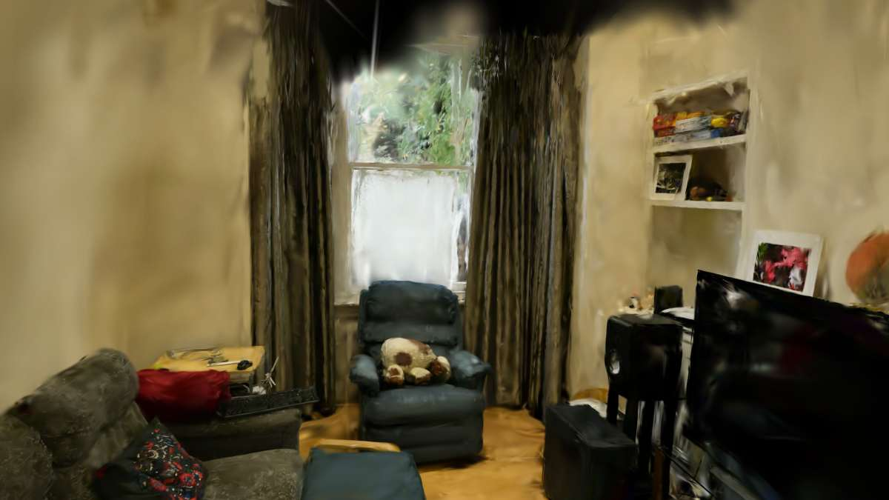

אני סורק את הנכס בערך בשעה, ואתה מקבל לינק שנפתח בנייד. הקונה מסתובב בין החדרים בעצמו, בגודל אמיתי — לא סרטון שהוא צופה בו, אלא חלל שהוא נמצא בתוכו.

אתה הולך בתוך החדר בעצמך: בנייד ג׳ויסטיק וגרירה, במחשב W A S D או חיצים. אפשר גם לקפוץ בין נקודות עצירה בלחיצה.
שלוש הסריקות הראשונות נעשות בחינם, תמורת אישור להציג אותן כאן.
דירה, דירת דוגמה של יזם, או נכס אירוח.
גילוי נאות: הסיור למעלה הוא הדגמה טכנית, לא נכס שאני צילמתי. הסצנה היא "room" מתוך דאטהסט המחקר Mip-NeRF 360 (Barron et al., Google Research). היא נמצאת כאן רק כדי להראות איך הנגן עובד, ותוחלף בסריקות שלי.
כשעה בנכס, הליכה איטית עם מצלמה. אתה לא צריך לעשות כלום חוץ מלפתוח את הדלת ולהדליק אור.
יום עד שלושה ימי עסקים. אני בונה את המודל, מגדיר את נקודות העצירה בכל חדר, וממתג את הלינק בשם שלך.
שולח בוואטסאפ, מטמיע ביד2 או באתר. נפתח בנייד בלי אפליקציה ובלי הרשמה.
מה צריך מהנכס: שיהיה ריק מאנשים, מואר, והתריסים פתוחים. מראות וחלונות גדולים הם החלק הקשה בסריקה — תגיד לי מראש אם יש, ואתאים את הצילום.